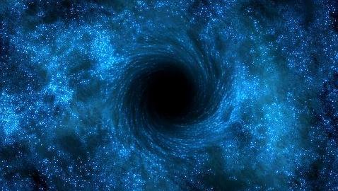
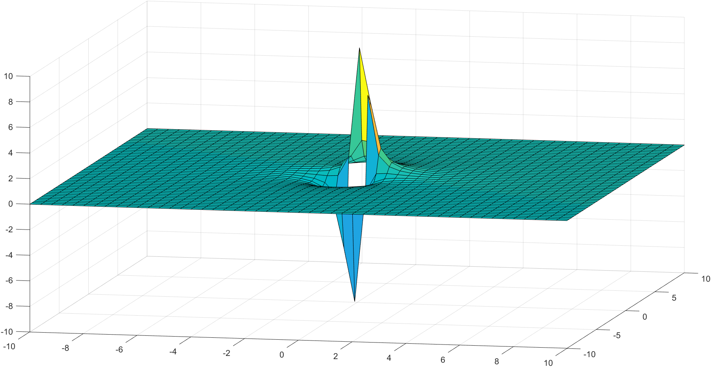
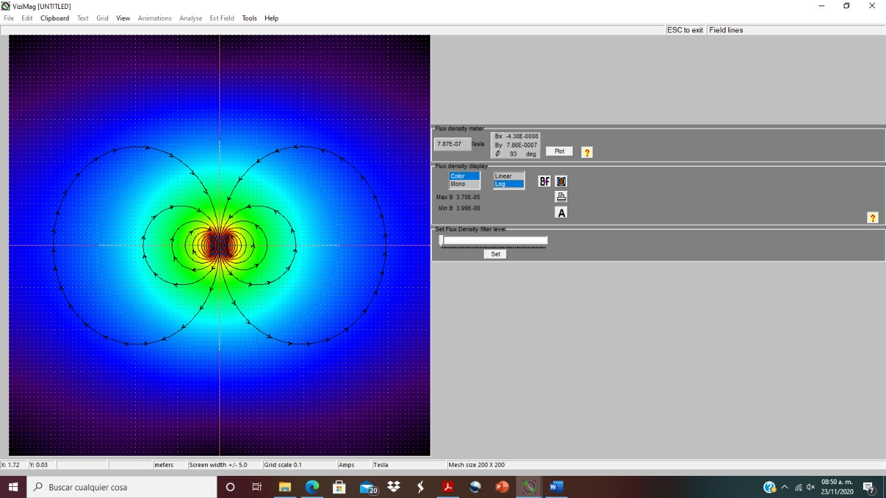
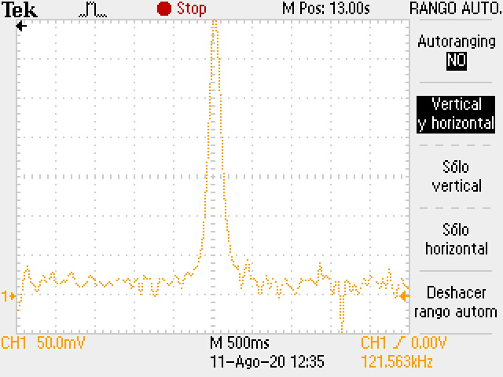

RESEARCH PROGRAMME: FIELD TORSION, THEIR APPLICATIONS AND TECHNOLOGIES
GENERAL GOAL: Through the field torsion as observable and geometrical and physical invariant of the deep Universe and creation of the energy, matter, movement and field interaction mechanisms we study its spectra and its possible applications in the frame of the advanced electrodynamics and electronics for obtaining of the future technologies of the next one hundred years.
SPECIFIC GOALS: The creation of experiments, devices and prototypes using the fundamentals of the field torsion in its several versions and spectral form in advanced electronics.
Dr. Francisco Bulnes-Aguirre
International Research Group
Detector of torsion
-

-

Detected Torsion by Hall Effect sensor, through of magnetic field intensity of moving
dilaton source during 1ms. B). The black hole with astronomic catalogue SS 433 is a giant black
hole that wobbles. With the VLA and the VLBA, we have watched the wiggle of its jets over time.
Here spectral image, we can see its corkscrew appearance obtained for the screw effect.
-

Magnetic field numerical simulation of the Earth. The yellow circle represents the quasi-
sphere surface of the Earth where the liquid nucleus with superconducting and MHD properties
generates the magnetic field oriented to the North Pole. The following layer, green circle
represents the atmospheric layer. The next layer, the light blue represents ionosphere and the last
limit of stratosphere. The following layer (last), strong blue circle represents the magnetosphere
layer. The magnetic lines and their orientation goes from South Pole and North Pole.
-

Corresponding signals detected in the torsion detection and showed in the wave
generator, under electronics measuring conditions: frequency of 235 kHz, wave sample of 13
seconds, voltage of 4 Volts.